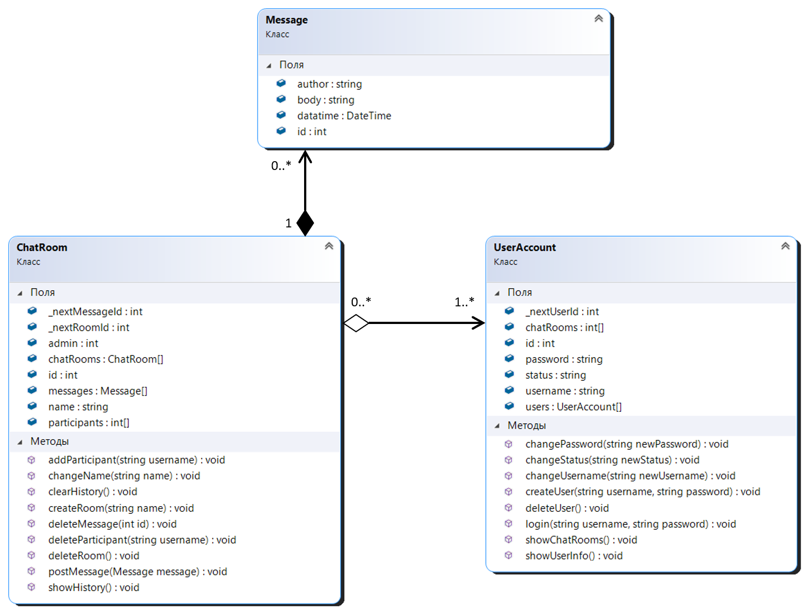

ЛАБОРАТОРНА РОБОТА №1
Тема: ІНКАПСУЛЯЦІЯ. КЛАСИ. ЕКЗЕМПЛЯРИ КЛАСІВ. ОБ’ЄКТНО-ОРІЄНТОВАНИЙ АНАЛІЗ ТА ПРОЕКТУВАННЯ. ДІАГРАМА ПРЕЦЕНДЕНТІВ
Мета: Виконати детальний опис предметного середовища, сформулювати мету розробки проекту, бізнес-задачі, бізнес-процеси,
сценарій дій системи. Здійснити Об’єктно-орієнтовний аналіз та проектування
Виконали cтуденти 2 курсу групи ІП-93. Рік навчання 2021
- Грибенко Єгор, номер залікової книжки: 9307
- Суханова Марія, номер залікової книжки: 9324
- Трембач Анастасія, номер залікової книжки: 9326
1.1. Опис предметного середовища
Предметним середовищем цього проекту є моделювання роботи чат-додатку для спілкування користувачів системи.
Відкривши додаток, користувач може авторизуватися в системі з існуючим логіном і паролем,
або зареєструватися в системі, вказавши логін(який також стане username користувача) і пароль.
Кожен користувач має наступні функції:
- Переглянути і змінити свої логін, пароль, статус
- Переглянути список чатів, в яких користувач є учасником
- Створити новий чат
- Видалити себе з системи
Після авторизації користувач бачить список чатів, в яких приймає участь.
Користувач може обрати уже створений чат або створити новий.
При створенні нового чата необхідно вказати його ім’я, і користувач, що створив чат, стає його адміном.
Для кожного учасника чата доступні наступні функції:
- Переглянути історію чата
- Написати повідомлення і відправити його в чат
- Видалити своє повідомлення
- Вийти з чата
Для адміну чата доступні всі функції звичайного учасника, плюс наступні функції:
- Змінити ім’я чата
- Додати нового учасника, вказавши його username
- Видалити учасника, вказавши його username
- Видалити будь-яке повідомлення в чаті
- Видалити історію чата
- Видалити чат
Якщо адмін вийде з чата, чат автоматично видаляється.
1.3 Бізнес-задачі, що моделюються в системі
Бізнес-задачі для незареєстрованих користувачів:
Бізнес-задачі для зареєстрованих користувачів:
- Переглядання і зміна логіна, паролю, статусу
- Переглядання списку доступних чатів
- Створення чата
- Видалення аккаунту
- Вихід з облікового запису
Бізнес-задачі для всіх учасників чата
- Переглядання історії чата
- Надсилання повідомлень
- Видалення своїх повідомлень
- Вихід з чата
Бізнес-задачі для адміністратора чата:
- Зміна ім’я чата
- Додання учасників до чата
- Видалення учасників з чата
- Видалення будь-яких повідомлень чата
- Видалення історії чата
- Видалення чата
1.4.Бізнес-процеси, що здійснюються в системі, що моделюється
Користування чат-додатком включає в себе наступні процеси:
- Процес керування повідомленнями
- Процес керування обліковим записом
- Процес керування чатами
Процес керування повідомленнями виконується тільки учасниками чата.
Цей процес включає в себе такі задачі:
- Надсилання повідомлень
- Видалення своїх повідомлень
Задачі процеса керування обліковим записом:
- Задачі незареєстрованого користувача:
- Задачі зареєстрованого користувача:
- Переглядання і зміна логіна, паролю, статусу
- Видалення аккаунту
- Вихід з облікового запису
Задачі процеса керування чатами:
- Задачі звичайного користувача:
- Переглядання списку доступних чатів
- Створення чата
- Задачі учасника чату:
- Переглядання історії чата
- Вихід з чата
- Задачі адміністратора чату:
- Зміна ім’я чата
- Додання учасників до чата
- Видалення повідомлень учасників чата
- Видалення історії чата
- Видалення чата
3.1. Проектування структури ПЗ - UML-діаграма класів (classes),
з обґрунтуванням типів зв’язків між класами, атрибутами та методами.
Було створено 3 основних класи та побудовані зв’язки між ними:
- ChatRoom – User – агрегація, оскільки чат не може існувати
без учасників, проте користувач може не мати жодного чату.
- ChatRoom – Message – композиція, оскільки повідомлення
є невід’ємною складовою кожної чат кімнати.
